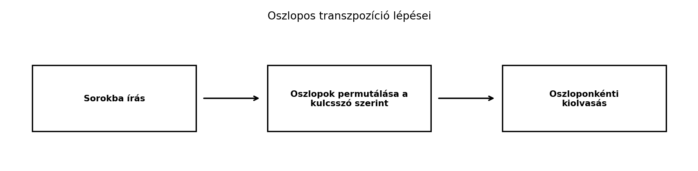
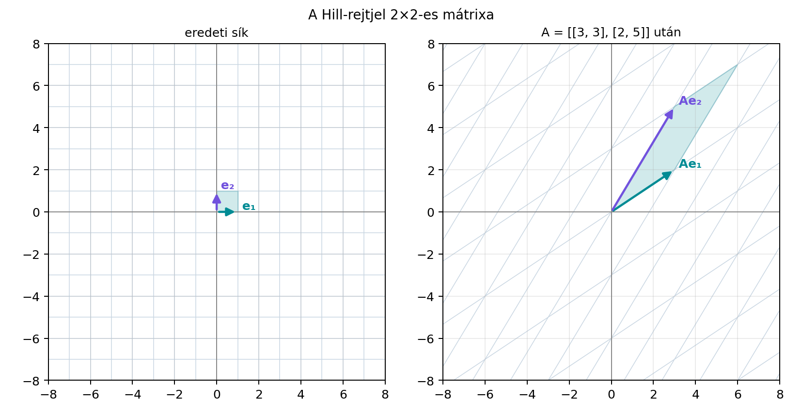
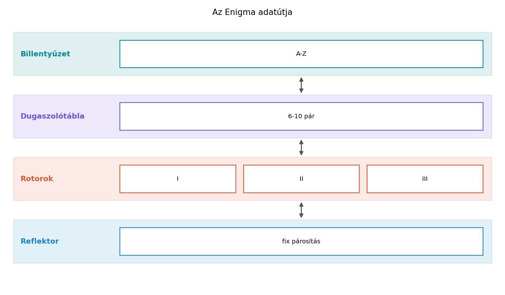

A Vigenère-rejtjel és a Kasiski-módszer után láttuk, hogy a monoalfabetikus helyettesítés gyenge a gyakoriságelemzéssel szemben. A következő ötlet: ne csak cseréljük a betűket, hanem rendezzük is át őket. A transzpozíció ezt teszi: a betűk ugyanazok maradnak, csak a sorrendjük változik. Ezzel az egybetűs gyakoriságelemzés önmagában nem töri fel, de a digram- és trigramstatisztikák igen. A Hill-rejtjel egy másik irányba megy: a betűket számokká alakítva lineáris kombinációval keveri, így egy blokkban minden rejtett betű az összes nyílt betűtől függ. Ez diffúziót visz be, de a linearitás a veszte: ismert nyílt szöveggel a kulcsmátrix egyszerűen visszaszámolható. Az Enigma a gépi korszak csúcsa: forgó rotorokkal polialfabetikus helyettesítést valósít meg, de a reflektor miatti „nincs betű önmagára” tulajdonság és a crib alapú keresés végül a feltöréséhez vezetett.
Az oszlopos transzpozíciót a következőképpen képzelhetjük el: írjuk a nyílt szöveget egy táblázatba soronként, majd olvassuk ki az oszlopokat egy megadott sorrendben. A Hill-rejtjel ezzel szemben minden blokkot egy mátrixszal szoroz meg, tehát a betűk „összekeverednek”. Az Enigma pedig egy elektromechanikus gép, amelyben a billentyűleütés árama átfut a dugaszolótáblán, három forgó rotoron, a reflektoron, majd vissza.

Definíció. Legyen a nyílt szöveg egy hosszú karaktersor, és legyen egy hosszú kulcsszó, amely az oszlopok számát és sorrendjét adja. A nyílt szöveget egy oszlopú táblázatba írjuk soronként, kitöltve a hiányzó cellákat (általában X-szel). Ezután az oszlopokat a kulcsszó betűinek ábécé szerinti sorrendjében olvassuk ki, és az így kapott karakterlánc a rejtett szöveg.
A kulcs a kulcsszó, illetve az általa meghatározott oszloppermutáció. A visszafejtéshez ismerni kell az oszlopok számát és a permutációt; a rejtett szöveget oszloponként visszaírjuk a táblázatba, majd soronként olvassuk.
Példa. Nyílt szöveg: TALALKOZO,
kulcsszó: KULCS. A kulcsszó hossza 5, tehát 5 oszlop. A
táblázat:
| sor oszlop | 1 | 2 | 3 | 4 | 5 |
|---|---|---|---|---|---|
| 1 | T | A | L | A | L |
| 2 | K | O | Z | O | X |
A kulcsszó betűi: K, U, L, C, S; ábécé szerinti sorrend: C(4), K(1),
L(3), S(5), U(2). Tehát az oszlopok kiolvasási sorrendje: 4, 1, 3, 5, 2.
A rejtett szöveg: 4. oszlop (A, O), 1. oszlop (T, K), 3. oszlop (L, Z),
5. oszlop (L, X), 2. oszlop (A, O) → AOTKLZLXAO.
Biztonsági elemzés. A transzpozíció megőrzi a betűgyakoriságot, így az egybetűs gyakoriságelemzés nem segít. Azonban a digramok és trigramok gyakorisága elárulja a permutációt, és a feltörés anagramma-megoldásként is felfogható. A transzpozíció egyedül gyenge, de helyettesítéssel kombinálva erős lehet (például a német ADFGX rejtjel).
Definíció. A Hill-rejtjel egy -es kulcsmátrixot használ felett. A nyílt szöveget hosszú blokkokra osztjuk, minden blokkot vektorrá alakítunk (A=0, …, Z=25), és a rejtett blokkot a képlettel számítjuk. A visszafejtéshez a mátrix inverzét használjuk: . A kulcsgenerálás során olyan -t választunk, amelyre ; ekkor létezik modulo 26.
A Hill-rejtjel diffúziót visz be: egy rejtett blokk minden betűje az összes nyílt betű lineáris kombinációja. Azonban a linearitás a végzetes gyengesége.

Példa. Legyen . Ellenőrizzük: , és , tehát invertálható. Az inverz számítása: , mert . Az adjungált mátrix . Így
Titkosítsuk a HELP üzenetet. A blokkok: HE
= (7, 4), LP = (11, 15). Számoljunk:
HE:ami HI.
LP:ami AT.
A rejtett szöveg: HIAT. Visszafejtés a
-gyel
hasonlóan.
Támadás. Tegyük fel, hogy a támadó ismer legalább darab lineárisan független nyílt szöveg blokkot és a hozzájuk tartozó rejtett blokkokat. Jelölje azt a mátrixot, amelynek oszlopai a nyílt blokkok, pedig azt, amelynek oszlopai a rejtett blokkok. Ekkor fennáll . Ha invertálható modulo 26, akkor a kulcsmátrix kiszámítható: .
Kidolgozott példa. Tegyük fel, hogy a fenti
kulccsal titkosítottunk, és a támadó ismeri a HE nyílt és
HI rejtett párt, valamint az LP nyílt és
AT rejtett párt. Ekkor
Számoljuk ki -et: , és . Az adjungált:
Így
Végül
Visszakaptuk a kulcsot.
Ez a támadás mutatja, hogy a Hill-rejtjel nem biztonságos, ha a támadó ismert nyílt szöveget szerez. A linearitás miatt a biztonság a mátrixinvertálás nehézségére sem támaszkodhat, hiszen a modulo 26 mátrixinverz könnyen számolható. A modern kriptográfia ezért nemlineáris elemeket (S-dobozok) használ, hogy a lineáris algebrai támadások ne működjenek.
Továbbvitt eredmény. A linearitás gyengeségét használjuk a Konfúzió, diffúzió és a helyettesítő–permutáló hálózat alfejezetben, ahol megmutatjuk, miért van szükség nemlineáris rétegre, és a Lineáris kriptanalízis alfejezetben, ahol a lineáris közelítések támadását vizsgáljuk. A crib, azaz az ismert nyílt szöveg szerepe a Az OTP korlátai és a kulcsújrahasználat alfejezetben is visszatér.
Az Enigma egy elektromechanikus rejtjelező gép, amelyet a 20. század elején fejlesztettek ki, és a második világháborúban a német hadsereg széles körben használta. A gép fő részei:

A reflektor miatt az Enigma titkosítás involúció: ha egy adott beállításnál az A betűt E-re kódolja, akkor ugyanabban a beállításban az E betűt A-ra kódolja. Ez lehetővé tette, hogy ugyanazzal a géppel titkosítsanak és visszafejtsenek. Az involúció önmagában még nem zárja ki a fixpontot (a dugaszolótábla is involúció, mégis lehet fixpontja); a fixpontmentességet a reflektor adja: a reflektor minden betűt egy másik betűvel párosít. A teljes leképezés alakú, ahol a reflektor, pedig a dugaszolótábla és a rotorok együttes permutációja; pontosan akkor teljesülne, ha , ami a reflektor fixpontmentessége miatt lehetetlen. Ezért egy betű soha nem kódolódhat önmagára. Ez a tulajdonság kulcsfontosságú volt a feltörésnél.
Az alábbi ábra egy hatbetűs (A–F) játék-Enigmán mutatja az áramutat: dugaszolótábla A↔︎C, egyetlen rotor (A→D, B→F, C→A, D→E, E→B, F→C) és reflektor (A↔︎B, C↔︎D, E↔︎F). Az A leütésekor az áram a C, majd a rotoron át az A érintkezőn a reflektorba jut, onnan a B-n át visszafelé az E lámpáig fut; ugyanebben az állásban az E leütése A-t ad.
A kulcstér: a rotorok kiválasztása és sorrendje, a rotorok kezdeti pozíciói, a gyűrűpozíciók, valamint a dugaszolótábla párosításai. A pontos kulcsméret függ a használt rotorok számától és a dugaszolások számától; a katonai Enigma esetében a kulcstér nagyságrendje feletti volt (a pontos érték forrása ellenőrzendő). Ez akkoriban hatalmasnak számított, de a gép gyengeségei miatt mégsem volt elegendő.
Marian Rejewski lengyel matematikus az 1930-as években elsőként törte fel az Enigmát. Kihasználta a német eljárás hibáját: az üzenet kulcsát kétszer titkosítva küldték el, ami redundanciát teremtett. Rejewski a permutációk ciklusszerkezetét elemezte, és katalógusokat készített a rotorbeállításokról.
Alan Turing és a Bletchley Park-i csapat a háború alatt
továbbfejlesztette a módszereket. A bomba (bombe) egy
elektromechanikus gép volt, amely a lehetséges rotorbeállításokat
vizsgálta. A támadás alapja a crib volt: olyan nyílt
szövegrészlet, amelyről a kódfejtők nagy valószínűséggel tudták, hogy
szerepel az üzenetben (például időjárás-jelentés, WETTER,
vagy megszólítás, OBERKOMMANDO). A crib és a rejtett szöveg
összevetésével a bomba olyan rotorbeállítást keresett, amely konzisztens
a megfigyelt párosításokkal, A „nincs betű önmagára” tulajdonsággal a
crib lehetséges helyzeteit szűkítették: ahol a crib egy betűje a rejtett
szöveg ugyanazon pozícióján álló betűvel egyezett, az a helyzet
kizárható. A bomba ezután minden rotorpozícióra a crib-gráf hurkai
mentén ellenőrizte, hogy a dugaszolási feltevés ellentmondásra vezet-e
(egy betűnek két különböző párja lenne); az ellentmondásos pozíciókat
elvetette. (A részletek forrása ellenőrzendő.)
A bomba nem próbálta ki az összes kulcsot; logikai következtetésekkel szűkítette a lehetséges beállításokat. A módszer lényege: a crib és a rejtett szöveg ismeretében fel lehetett írni egy ciklusgráfot a betűk között, és a gép mechanikusan kereste azokat a rotorpozíciókat, amelyek kielégítik a gráf által támasztott feltételeket.
A második világháborús Enigma-feltörés a kriptográfia történetének egyik legismertebb példája. A Bletchley Parkban folyó munka, amelyben Alan Turing mellett Gordon Welchman és sokan mások vettek részt, jelentősen hozzájárult a szövetségesek győzelméhez. A német üzenetek megfejtése lehetővé tette a tengeralattjáró-útvonalak előrejelzését, a harctéri parancsok megismerését. A történészek becslése szerint a háború évekkel rövidült meg, bár a pontos hatás vitatott. A kódfejtés titokban maradt egészen az 1970-es évekig, ami azt is mutatja, hogy a kriptográfiai előny milyen hosszú távú stratégiai értéket képvisel.
Tanulságok: (1) a biztonság nem alapulhat a gép titkosságán (Kerckhoffs elve), mert az Enigma szerkezetét ismerték, mégis feltörték; (2) a használati hibák (ismétlődő kulcsok, sablonos szövegek, cribek) végzetesek; (3) a kombinatorikus kulcstér nagysága önmagában nem garantál biztonságot, ha a szerkezet sérülékeny.
Az alábbi kód a Hill-rejtjel 2×2-es változatát mutatja be, oktatási célra. NEM ÉLES HASZNÁLATRA, mert nincs padding, és a mátrixinverz számítása sem konstans idejű.
# OKTATÁSI CÉLRA – NEM ÉLES HASZNÁLATRA
def mod_inv(a, m):
return pow(a, -1, m)
def hill_encrypt(plaintext, K):
# plaintext: nagybetűs string, páros hossz, K: 2x2 mátrix (list of lists)
ciphertext = ""
for i in range(0, len(plaintext), 2):
block = [ord(ch) - 65 for ch in plaintext[i:i+2]]
# ha páratlan, X-szel töltjük ki (egyszerű, nem szabványos padding)
if len(block) == 1:
block.append(23) # X
c = [(K[0][0] * block[0] + K[0][1] * block[1]) % 26,
(K[1][0] * block[0] + K[1][1] * block[1]) % 26]
ciphertext += chr(c[0] + 65) + chr(c[1] + 65)
return ciphertext
def hill_decrypt(ciphertext, K):
det = (K[0][0] * K[1][1] - K[0][1] * K[1][0]) % 26
inv_det = mod_inv(det, 26)
K_inv = [[(K[1][1] * inv_det) % 26, ((-K[0][1]) * inv_det) % 26],
[((-K[1][0]) * inv_det) % 26, (K[0][0] * inv_det) % 26]]
return hill_encrypt(ciphertext, K_inv)
K = [[3, 3], [2, 5]]
pt = "HELP"
ct = hill_encrypt(pt, K)
print("Rejtett:", ct)
print("Visszafejtett:", hill_decrypt(ct, K))Várt kimenet:
Rejtett: HIAT
Visszafejtett: HELPA kód a pow(a, -1, m) függvényt használja a moduláris
inverzhez. A hill_decrypt ugyanazt a szorzást végzi a
mátrixszal. A példában a szöveg hossza páros, így padding nem lép fel.
Valós használatban a cryptography csomag magas szintű AEAD
konstrukcióit kell választani.
1. feladat (A). Adott a Kulcs: KULCS,
nyílt szöveg: HOLNAP. Végezze el az oszlopos
transzpozíciót, ha a kitöltő karakter X, és az oszlopokat a kulcsszó
betűinek ábécé sorrendjében olvassuk.
2. feladat (A). Legyen a Hill-kulcs
.
Titkosítsa a MA blokkot (M=12, A=0). Ellenőrizze, hogy a
mátrix invertálható-e, és adja meg az inverzét.
3. feladat (B). A Hill-rejtjel 2×2-es kulcsa
ismeretlen. A támadó tudja, hogy a BA nyílt blokkhoz
DC, a DB nyílt blokkhoz ML
rejtett tartozik. Határozza meg a
mátrixot, és ellenőrizze, hogy érvényes Hill-kulcs-e. (B=1, A=0, D=3,
C=2, M=12, L=11.)
4. feladat (B). Írjon Python-függvényt, amely egy
oszlopos transzpozíciót visszafejt a kulcsszó ismeretében. A függvény
kapja meg a rejtett szöveget és a kulcsszót, adja vissza a nyílt
szöveget (a kitöltő X-eket hagyja el a végéről). Tesztelje a
KULCS kulccsal és az AOTKLZLXAO rejtett
szöveggel.
5. feladat (C). Bizonyítsa be, hogy ha a Hill-rejtjel mátrixára , akkor a titkosítás bijekció -en, azaz a visszafejtés egyértelmű. (Útmutatás: mutassa meg, hogy a mátrixnak van inverze modulo 26, és az inverz egyértelmű.)
6. feladat (D). Törje fel a következő,
Hill-rejtjellel titkosított üzenetet. A kulcs 2×2-es, ismeretlen.
Tudjuk, hogy a rejtett szöveg WFRLMMWFPZGX, és a nyílt
szöveg ATTA-val kezdődik. Határozza meg a kulcsot,
ellenőrizze az invertálhatóságát, majd fejtse vissza a teljes üzenetet.
(A=0, …, Z=25.)
Önellenőrzés – válaszok:
1. feladat megoldása. A HOLNAP szöveget
a 5 oszlopos táblázatba írjuk soronként: H, O, L, N, A; második sor: P,
X, X, X, X. Az oszlopok kiolvasási sorrendje a KULCS betűi
alapján: C(4), K(1), L(3), S(5), U(2). Tehát: 4. oszlop: N, X; 1.: H, P;
3.: L, X; 5.: A, X; 2.: O, X. A rejtett szöveg:
NXHPLXAXOX.
2. feladat megoldása. , . Az inverz: (mert ). Adjungált: . Így
Titkosítás: .
3. feladat megoldása. A nyílt blokkok mátrixa (oszloponként a blokkok) , a rejtett blokkoké . , tehát invertálható. . Végül
A kulcs
(ugyanez a 7.4.4 példájának kulcsa). Ellenőrzés:
,
,
tehát érvényes, invertálható Hill-kulcs; a
hill_encrypt('BADB', [[3,3],[2,5]]) a DCML
szöveget adja (futtatva).
4. feladat megoldása. A kód:
# OKTATÁSI CÉLRA – NEM ÉLES HASZNÁLATRA
def transposition_decrypt(ciphertext, keyword):
n = len(keyword)
rows = len(ciphertext) // n
# Oszlopok sorrendjének meghatározása
order = sorted(range(n), key=lambda i: keyword[i])
# Rejtett szöveg felosztása oszlopokra a sorrendnek megfelelően
cols = [''] * n
pos = 0
for idx in order:
cols[idx] = ciphertext[pos:pos+rows]
pos += rows
# Soronkénti kiolvasás
plaintext = ''.join(''.join(cols[i][j] for i in range(n)) for j in range(rows))
# Kitöltő X-ek eltávolítása a végéről
return plaintext.rstrip('X')
print(transposition_decrypt("AOTKLZLXAO", "KULCS"))Várt kimenet: TALALKOZO.
5. feladat megoldása. Ha , akkor létezik . Az inverz mátrix konstruálható a klasszikus adjungált képlettel: . Ez az inverz kielégíti . Így a leképezésnek van inverze: , tehát bijekció. Az egyértelműség az inverz létezéséből következik.
6. feladat megoldása. Ez a támadás illusztrálja a
linearitás kihasználását: az ismert nyílt–rejtett blokkpárokból
megkapjuk a kulcsot. Az első két nyílt blokk AT és
TA, a hozzájuk tartozó rejtett blokkok WF és
RL: A=0, T=19, W=22, F=5, R=17, L=11. A blokkokat
oszlopokba írva
, , tehát invertálható; (mert ). Adjungált: . Így
Végül
Invertálhatóság: , , tehát érvényes Hill-kulcs. (mert ), így
A blokkonkénti visszafejtés
-gyel
adja a AT, TA, CK,
AT, DA, WN blokkokat, vagyis a
teljes üzenet ATTACKATDAWN. Ellenőrzés (futtatva):
hill_encrypt('ATTACKATDAWN', [[5, 8], [17, 3]]) →
WFRLMMWFPZGX, és a
mátrixszal ugyanez visszafejtve ATTACKATDAWN.
A transzpozíció a betűk sorrendjét változtatja, de a gyakorisági statisztikákat megőrzi, ezért önmagában gyenge. A Hill-rejtjel lineáris transzformációt alkalmaz -en, ami diffúziót ad, de a linearitás miatt ismert nyílt szöveges támadással a kulcs mátrixinvertálással visszaszámolható: ha , akkor . Továbbvitt eredmények: (1) A linearitás gyengesége indokolja a nemlineáris S-dobozok szükségességét a Konfúzió, diffúzió és a helyettesítő–permutáló hálózat alfejezetben, és a lineáris közelítések támadását a Lineáris kriptanalízis alfejezetben. (2) A crib, mint ismert nyílt szöveg, a Az OTP korlátai és a kulcsújrahasználat alfejezetben is kulcsszerepet játszik. Az Enigma rotoros, reflektáló gépe polialfabetikus rejtjelezést valósít meg, de a „nincs betű önmagára” tulajdonság és a crib-alapú bomba lehetővé tette a feltörését. A tanulság: a kulcstér nagysága nem elég, a szerkezeti gyengeségek és a használati hibák végzetesek.
Ez az alfejezet klasszikus kriptográfiai ismeretekre épül, amelyek
standard tankönyvekben megtalálhatók, például Menezes–van
Oorschot–Vanstone Handbook of Applied Cryptography és
Katz–Lindell Introduction to Modern Cryptography műveiben. Az
Enigma pontos kulcsméretét, a Bletchley Park-i munkák részleteit és a
háborús hatás becsléseit nem jelöltük ellenőrzöttként; azok forrásait
történeti szakirodalomban kell ellenőrizni. A Hill-rejtjel
mátrixinverziós képlete a lineáris algebrából következik, a moduláris
inverz számítása a korábbi alfejezetekben tárgyalt. A Python-kódokban
használt pow(a, -1, m) a Python 3.8+ verziókban elérhető; a
példakód oktatási célú, nem éles használatra.